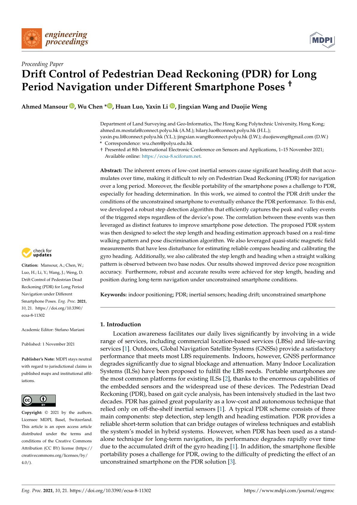

Drift Control of Pedestrian Dead Reckoning (PDR) for Long Period Navigation under Different Smartphone Poses
Paper preview

Research story and quick reading guide
This paper studies drift control in PDR under different smartphone poses. PDR is attractive because it can estimate pedestrian movement without requiring external infrastructure, making it useful for indoor and GNSS-denied environments. However, low-cost inertial sensors accumulate error, and heading drift becomes increasingly serious during long-period navigation. Smartphone pose variation makes the problem harder because the relationship between device orientation and walking direction changes when the phone is held, placed in a pocket, or carried differently.
The paper addresses this practical issue by examining how PDR behaves under multiple smartphone poses and by focusing on drift control over longer navigation periods. The core idea is that a realistic PDR system should not assume a perfectly horizontal or fixed device. It should account for the fact that users naturally change how they carry their phones. The paper therefore contributes to the movement from controlled inertial navigation experiments toward more practical smartphone-based positioning.
The visual story is sensor drift + pose change → heading/trajectory error → drift-control strategy → longer navigation stability. This flow is important because PDR errors are cumulative. A small heading or step error may seem minor at the beginning, but over time it can create a large trajectory deviation. Drift control is therefore essential for any PDR system that aims to support continuous navigation.
The paper is useful as an early reference for pose-aware PDR. It highlights that smartphone navigation must consider human-device interaction, not only sensor mathematics. The same walking path can produce different sensor patterns depending on how the device is carried. This insight connects the paper to later work on carrying-mode recognition, heading correction, and learning-assisted smartphone navigation.
For readers, the paper can be understood as a warning and a design guide. The warning is that fixed-pose assumptions can make PDR appear more reliable than it will be in practice. The design guide is that pose variation and long-term drift should be handled explicitly. This makes the work relevant to smartphone IPS, inertial navigation, and user-friendly pedestrian positioning.
This paper should be cited when discussing PDR drift control, smartphone pose effects, long-period pedestrian navigation, inertial sensor error accumulation, and the practical limitations of fixed-pose assumptions in smartphone-based indoor positioning.
Extended summary
This proceeding paper investigates PDR drift control for long-period smartphone navigation under different phone poses, contributing to robust pedestrian tracking with embedded sensors.
When to cite this paper
- PDR drift is evaluated over long navigation periods
- smartphone pose variation affects pedestrian navigation
- embedded sensors are used for phone-based indoor navigation
- PDR error accumulation and correction strategies are discussed
Keywords
pedestrian dead reckoningPDR drift controlsmartphone poseslong-period navigationindoor navigationsmartphone sensors
Official link
https://doi.org/10.3390/ecsa-8-11302
For publisher-restricted articles, link to the DOI or an allowed accepted manuscript rather than uploading a restricted PDF.
BibTeX
@inproceedings{Mansour2021drift,
title = {Drift Control of Pedestrian Dead Reckoning (PDR) for Long Period Navigation under Different Smartphone Poses},
author = {Ahmed Mansour and Wu Chen and Huan Luo and Yaxin Li and Jingxian Wang and Duojie Weng},
year = {2021},
journal = {Engineering Proceedings},
doi = {10.3390/ecsa-8-11302},
}